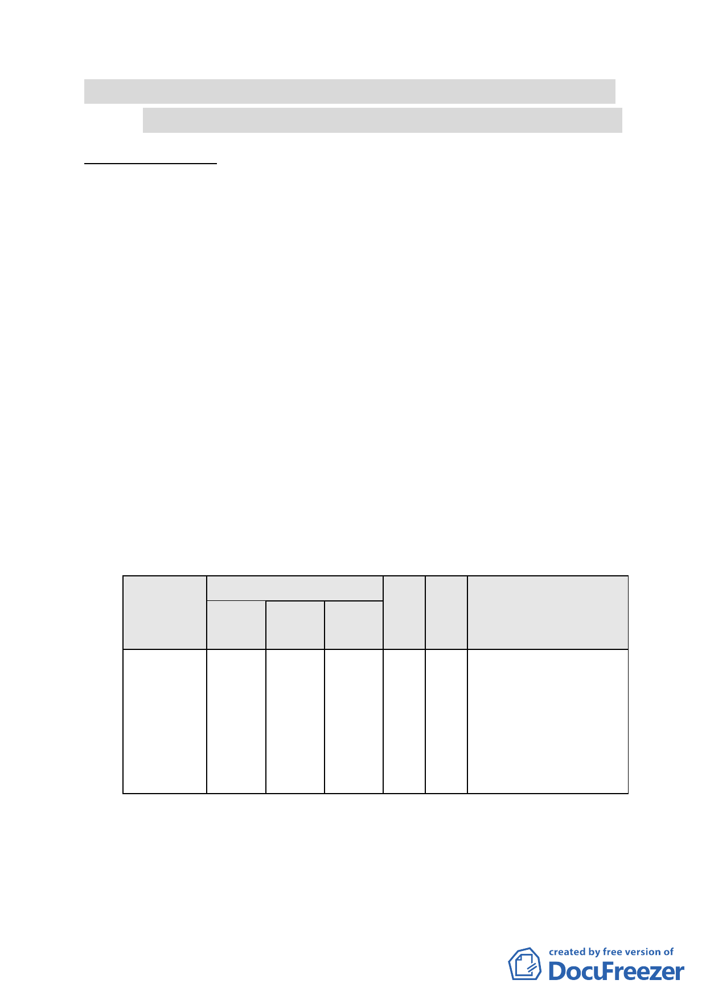

案名：變更臺北市內湖區潭美段 5 小段 33 及 33-1 地號等 2 筆土
地辦公服務區（二）為辦公服務區（二）（特）細部計畫案
案情概要說明：
一、 本案位於內湖五期重劃區內，為中山高速公路及九號道路、
南京東路、成功路二段所圍區域。本區鄰近中山高速公路南
京東路交流道，計畫面積約12,683平方公尺。
二、 計畫緣起與目的：
本案以符合臺北市政府「徵求參與『促進都市再生2010
年臺北好好看』開發計畫案」之「科技產業軸帶」範疇，華
固建設股份有限公司擬引進企業辦公室、小型辦公室等辦公
機能，進而扮演串連地區科技產業發展之角色，經市府推薦
依都市計畫第24條變更都市計畫。
三、 原公展計畫內容：
（一） 變更土地使用分區
本計畫變更辦公服務區(二)為辦公服務區(二)(特)，面
積為1.2683公頃。
表一 變更計畫內容表
變更內容
建
位置
原計畫
新計畫
面積
（公頃）
蔽
率
街廓編號
辦5
潭美段5小
段 33 及
33-1 地 號
辦公服
務區
(二)
辦公服
務區
(二)(特
)
1.2683
40%
等2筆土地
容
積 變更理由
率
一、配合政府政策促進
225
%
土地利用。
二、透過都市設計管制之
落實，改善都市空間
品質。
（二） 使用項目及使用強度依原計畫規定。
（三） 容積獎勵規定
- 10 -